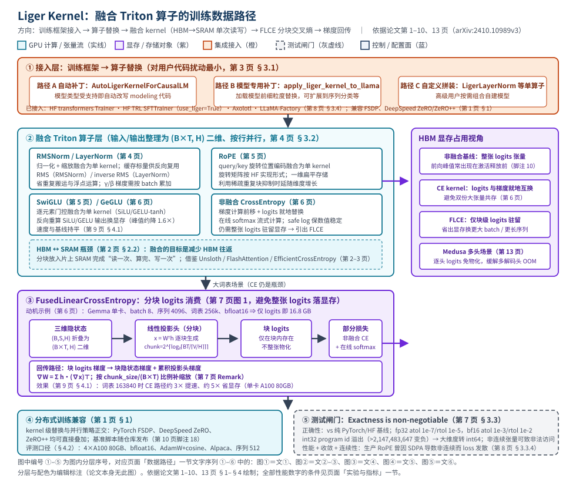

Liger Kernel：用融合 Triton 算子压低 LLM 训练的显存峰值与耗时
本页为第 12 篇（训练、并行与 GPU Kernel 类），全部定量内容取自本地论文 PDF 12_Liger-Kernel_2410.10989.pdf（arXiv:2410.10989v3，cs.LG，水印 2025-01-24），并逐条标注 PDF 页码与章节；17 页中第 1–15 页已逐页目检，第 16–17 页（参考文献）经文本交叉核对。
快速标签与阅读说明
- 生命周期：训练（微调/训练算子层）
- 形态：GPU kernel 库，单机/多机均可；与 FSDP、DeepSpeed ZeRO/ZeRO++ 叠加
- 目标硬件：论文实验口径为 NVIDIA A100 80GB（单卡/4 卡/8 卡）；仓库 CI 另覆盖 AMD/Intel（R+P，但论文性能数字仅 A100）
- 核心资源：HBM 显存 · 片上 SRAM · 算力
- 证据状态：P + R（正文含 E/I 标签）
最后核验日期：（PDF 第 1–15 页逐页目检；官方仓库已在线核验）。
证据完整度：关键定量结论均带 PDF 页码/图号与完整测试条件，未获取的字段一律写明「论文未明确披露」；仓库经在线核验（R）；云上产品映射为示例（E，未逐一核验规格与价格）；成本公式、回退与运维建议为参数化推断（I）。本页不设任何评分。
证据标签图例： P＝论文 R＝官方仓库 E＝外部资料 I＝编辑推断
1. 摘要与一句话判断
| 标题 | Liger Kernel: Efficient Triton Kernels for LLM Training（编辑译名：面向 LLM 训练的高效 Triton 算子库） |
|---|---|
| 作者与机构 | Pin-Lun Hsu、Yun Dai、Vignesh Kothapalli、Qingquan Song、Shao Tang、Siyu Zhu、Steven Shimizu、Shivam Sahni、Haowen Ning、Yanning Chen；LinkedIn Inc P（第 1 页；分工详见第 15 页 §6.1） |
| arXiv / 版本 | arXiv:2410.10989v3（cs.LG），PDF 水印 2025-01-24；未标注会议录用信息，第 14 页 Note 自述「本技术报告仅关注性能基准」 P（第 1、14 页） |
| 代码 | 摘要末句明示 https://github.com/linkedin/Liger-Kernel（permissive license），经在线核验为 BSD-2-Clause R（2026-09-15，见 #links） |
| 基准版本 | 论文全部数值实验基于 Liger-Kernel v0.2.1 P（第 9 页 §4 与脚注 17）；R 该 tag 已在线确认存在 |
| 评估范围 | kernel 级：CrossEntropy、GeGLU、SwiGLU、RMSNorm、LayerNorm、RoPE（单卡 A100）；端到端微调：LLaMA 3-8B、Qwen2、Gemma、Mistral、Phi3（4×A100）；Medusa 多头训练（8×A100） P（第 9-14 页 §4） |
3 分钟速读
- 问题：PyTorch eager 逐步执行带来调用栈、dispatch、kernel 启动时延，且为反向物化全部中间激活；HBM 与片上 SRAM 之间的频繁拷贝是核心瓶颈；大词表模型的 logits 张量物化成为训练显存的主要尖峰 P（第 1-2 页 §2、第 6 页 §3.2）。
- 方案：一套面向 LLM 训练的融合 Triton kernel 库（最小依赖 PyTorch + Triton），三层 API（自动补丁 / 模型专用补丁 / 单算子拼装），配合 FusedLinearCrossEntropy 的分块 logit 消费；与 FSDP、DeepSpeed ZeRO/ZeRO++ 正交叠加 P（第 1、3-7 页）。
- 论文声称的主要结果：相对 HuggingFace 实现，平均吞吐 +20%、GPU 显存 −60%（摘要）；端到端逐模型为 LLaMA 3-8B +42.8%/−54.8%（batch 64）、Qwen2 +25.5%/−56.8%（batch 48）、Gemma +11.9%/−51.8%（batch 48）、Mistral +27%/−21%（batch 128）、Phi3 +17%/−13%（batch 128） P（第 1 页摘要、第 10 页 §4.2；条件见 #experiments）。
- 质量护栏：论文把 exactness 视为不可妥协项：正确性容差测试（fp32/bf16 两档）、性能基准、小规模收敛测试、连续性检查四类实践内建，且摘要称集成测试内建（built-in） P（第 1 页摘要、第 7-8 页 §3.3）。
- 主要限制：全部数字来自 A100 80GB + bfloat16 + v0.2.1；端到端序列长固定 512、20 步采样；基线只有 HuggingFace eager（未对比 torch.compile 等）；结果仅以图呈现、无数据表；Medusa 场景只有定性结论 P（第 9-14 页）+ I（公平性归纳）。
2. 问题背景
执行开销与显存开销同源：论文把 LLM 训练的低效归结到两点——eager 模式逐步执行带来的函数调用栈、dispatching 与 CUDA kernel 启动时延，以及「为反向而物化每一个中间激活」的显存占用 P（第 1-2 页 §2）。I 对架构师而言，这意味着微调作业的「OOM 上限」往往不是权重，而是激活与 logits 的临时峰值。
硬件层瓶颈：自定义算子融合的主要目标是缓解 HBM（大而慢）与片上 SRAM（快而小）之间频繁内存拷贝的瓶颈：SM 需要快速取数才能让多线程并行，等 HBM 送数时计算核心空闲；该问题在Transformer类大矩阵、多算子场景更严重 P（第 2 页 §2.2，引 Wen-Mei et al. 2022）。
既有三条路线与 Liger 的站位：P（第 2-3 页 §2.1-§2.3）
- 模型编译器：torch.compile（PyTorch 2.0 JIT 捕图 → Triton/C++ 代码生成）、Apache TVM、XLA、nvFuser——泛化的图级优化，覆盖面广但对特定计算模式的针对性弱于手写融合。
- 算法视角的融合：以 FlashAttention/FlashAttention-2 为代表，把注意力分块放进 SRAM、免整张注意力矩阵物化，显存复杂度从二次方降到线性——针对性精确、收益更大。
- 手写 Triton 融合生态：xFormers（Meta）、FlashAttention 仓库（除 CUDA attention 外还含 layer norm、linear+squared ReLU 融合等 Triton/torch.script 组件）、Unsloth（重写流行 LLM 与 LoRA 层）、EfficientCrossEntropy（线性投影与 CE 融合、分块算损失以免物化整张 logits）；Liger 明言「借鉴并复用上述项目的代码」。
目标工作负载与约束：LLM 训练（论文实验以微调为主）；要求最小依赖（仅 PyTorch + Triton）；兼容 PyTorch FSDP、DeepSpeed ZeRO、ZeRO++ 等分布式框架 P（第 1 页 §1）。基线口径：性能对比基线为 HuggingFace 实现（eager 模型代码） P（第 1 页摘要、第 9 页图 2/图 3 图例）。I 论文未对比 torch.compile 或其他融合路线，属于其评测边界（见 #experiments 公平性说明）。
3. 核心机制
3.1 三层级 API：对现有代码扰动最小
- 自动补丁：
AutoLigerKernelForCausalLM.from_pretrained(...)——模型类型受支持即自动改写 modeling 代码，无需模型专用导入 P（第 3 页 §3.1）。 - 模型专用补丁：如
apply_liger_kernel_to_llama()，加载模型前细粒度替换；适用于 causal LM 之外的形态（如序列分类） P（第 3 页 §3.1）。 - 单算子拼装：高级用户直接使用
LigerLayerNorm、LigerCrossEntropyLoss等组件自组模型 P（第 3 页 §3.1）。
I 三层 API 的运维含义：接入强度与回退粒度一一对应——自动补丁最容易整体开关，单算子拼装则支持「只替换风险最低的算子」的灰度策略（见 #security-ops）。
3.2 kernel 通用骨架
- 所有 kernel 把输入/输出整形为 (B×T, H) 二维矩阵（B=batch、T=序列长、H=隐维度），kernel 内由 Triton 按输入行并行；warp 数按 block size 计算（复用 Unsloth 的
calculate_settings） P（第 4 页 §3.2 与脚注 6）。 - 反向推导以「单行输入 x → 输出 y → ∇yL」为单位展开，共享参数（γ/β）的梯度再按 batch 累加 P（第 4 页 §3.2）。
3.3 算子覆盖：论文实现与评估的 7 个 kernel
| kernel | 融合内容与数据策略 | 反向/数值口径 | 页码 | 运维要点（I） |
|---|---|---|---|---|
| RMSNorm | 归一化 + 缩放融合为单个 Triton kernel（式 1）；实现参考 Unsloth rms_layernorm.py 与 Triton layer-norm 教程（脚注 7） | 缓存 RMS 供反向复用（式 2）；同 batch 共享 γ，γ 梯度按 batch 累加 | P 第 4 页 | 基准：约 7× 提速、约 3× 省显存（hidden 16384） |
| LayerNorm | 中心化 + 归一化 + 缩放融合（式 3）；缓存 inverse RMS | γ/β 梯度累加（式 4）；聚合比较过 PyTorch 朴素 / flash-attention 两阶段 / Triton atomic 三种变体，采用两阶段（脚注 8） | P 第 4-5 页 | 基准：执行时间约降 30%，显存开销极小 |
| RoPE | query/key 旋转位置编码融合为单 kernel（式 5）；旋转矩阵按 HuggingFace 实现形式（脚注 9：transformers v4.44.2 modeling_llama.py#L253），实现上利用稀疏性采用 Su et al. (2023) 高效计算 | 反向 ∇xL = R⊤∇yL（式 6）；要求输入连续（曾因 SDPA 导数非连续致 loss 发散） | P 第 5 页、第 8 页 §3.3.4 | 基准：约 8× 提速、约 3× 省显存（hidden 16384）；版本耦合点 |
| SwiGLU | 逐元素门控融合：y = SiLU(Wx+b) ⊙ (Vx+c)；仅考虑 β=1（Swish 退化为 SiLU，与受支持 HF LLM 一致）（式 7-8） | 反向重算 SiLU 输出省显存（式 9） | P 第 5 页 | 基准：速度与基线持平、峰值显存约降 1.6×（seq 16384） |
| GeGLU | 同 SwiGLU 结构，用 tanh 近似 GELU（式 10-12） | 反向重算 GELU 输出（式 13-14） | P 第 6 页 | 同上：速度持平、显存约降 1.6×（seq 16384） |
| CrossEntropy（非融合 CE） | 梯度计算前移到 forward，logits 张量与梯度就地（in-place）替换，避免两份大张量共存；在线 softmax 流式计算；safe log 防数值失稳（式 15-16） | ∇xL = y − t 就地写回 logits 存储区 | P 第 6 页 | 单张 logits 仍需整体驻留显存 → 引出 FLCE；基准：约 3× 提速、约 5× 省显存（vocab 163840） |
| FusedLinearCrossEntropy（FLCE） | 把线性投影头与 CE 融合：隐状态折叠为 (B×T, H) 后分块投影，块 logits 交给非融合 CE kernel 算部分损失并就地产出块梯度（第 7 页图 1） | ∇hL = W∇xL、∇WL = Σ h(∇xL)⊤ 逐块累加（式 17）；mean reduction 下按 chunk_size/(B×T) 补缩放（Remark） | P 第 6-7 页 | 大词表场景的首选；Medusa 多头训练的关键依赖 |
FLCE 的分块尺寸（提取文本在此处错序，已按原页更正）：P（第 7 页）
P 由于所有 chunk 共用投影权重 W，最终梯度需按块累加；mean reduction 的 CE 逐块计算不天然归一到全序列，Remark 以 chunk_size/(B×T) 比例补缩放修正该近似（第 7 页）。I 该「缩放校正」说明 FLCE 在数值上是对整批 CE 的受控近似，升级或复现时应保留论文的校正口径并跑收敛对照。
3.4 质量护栏：四类测试实践
- 正确性：对照纯 PyTorch/HuggingFace 实现，覆盖规则（2 的幂）与不规则形状、多种 dtype；容差 fp32 atol=1e-7 / rtol=1e-5，bf16 atol=1e-3 / rtol=1e-2；实践中容差可能需再放宽 1-2 个数量级（即使对 exact kernel），此时以收敛测试兜底（脚注 12） P（第 8 页 §3.3.1）。
- int32 溢出陷阱：program id 默认 int32，
program_id × Y_stride > 2,147,483,647时变负导致非法内存访问；大维度须显式转 int64 P（第 8 页 §3.3.1）。 - 性能：以速度与显存两维证明「重写为 Triton」是值得的；测试形状取自真实训练（如 batch 4、hidden 2048、可变序列长） P（第 8 页 §3.3.2）。
- 收敛与连续性：小规模模拟真实训练中 contiguity/shape/dtype 差异，校验训练结束时 logits、权重、loss 的 exactness；Triton 直接操作物理内存，非连续张量可致非法访问或错误输出——生产 RoPE 曾因
scaled_dot_product_attention导数非连续而显著 loss 发散 P（第 8 页 §3.3.3-§3.3.4）。
3.5 训练框架接入
- 论文 §3.4 列出的集成：HuggingFace transformers
Trainer、HuggingFace TRLSFTTrainer、Axolotl、LLaMA-Factory；通常一个标志即可，例如 TRL 的SFTConfig(..., use_liger=True)会经AutoLigerKernelForCausalLM加载模型（示例模型meta-llama/Meta-Llama-3-8B） P（第 8 页 §3.4 与脚注 13-16）。 - 边界提示：PyTorch Lightning 集成仅出现在第 15 页 §6.1 贡献者分工中，§3.4 未列入——引用时不应把它与上述四个集成等同 P（第 15 页）+ I。
- 分布式兼容：kernel 级替换与并行策略正交，支持 FSDP、DeepSpeed ZeRO、ZeRO++ P（第 1 页 §1）。
4. GPU/系统数据路径

端到端文字序列（①–⑥；与图中分层 ①–⑤ 的对应关系见图注）
- ① 接入层（控制面）：训练作业以三层 API 之一启动——
AutoLigerKernelForCausalLM自动补丁、模型专用补丁（如apply_liger_kernel_to_llama()）或单算子拼装；框架形态下由use_liger=True等标志触发 P（第 3 页 §3.1、第 8 页 §3.4）。 - ② 张量整形：被替换算子的输入/输出统一整形为 (B×T, H) 二维矩阵，kernel 按行并行、warp 数由 block size 推导 P（第 4 页 §3.2）。
- ③ 融合执行（数据面核心）：每个融合 kernel 把一行数据一次载入片上 SRAM，完成「归一化+缩放」「旋转」「门控激活」等原本多个算子的正反向计算，缓存反向所需中间量（RMS、inverse RMS），把对 HBM 的多次往返压缩为最少读写 P（第 2 页 §2.2、第 4-6 页 §3.2）；SwiGLU/GeGLU 反向以重算换显存 P（第 5-6、9 页）。
- ④ 大词表损失路径（FLCE）：已对齐标签的隐状态折叠为 (B×T, H) → 逐块过线性投影头得块 logits（chunk_size = 2^⌈log₂⌈BT/⌈V/H⌉⌉⌉）→ 非融合 CE kernel（在线 softmax）逐块算部分损失并就地把块 logits 替换为块 logits 梯度 → 回传得块隐状态梯度、累加投影头梯度 ∇WL = Σ h(∇xL)⊤，并按 chunk_size/(B×T) 补缩放 P（第 6-7 页 §3.2、图 1、Remark）。
- ⑤ 梯度归约交还框架：Liger 只替换算子内部执行；参数梯度写出后，all-gather/reduce-scatter/allreduce 等分布式归约仍由 FSDP、DeepSpeed ZeRO/ZeRO++ 完成 P（第 1 页 §1）+ I（职责边界解读）。
- ⑥ 测试闸门（旁路）：接入前后跑正确性（容差制）、性能、收敛、连续性四类检查；摘要称基准与集成测试内建（built-in） P（第 1 页摘要、第 7-8 页 §3.3）。
| 事实/数值 | 对象与条件 | 论文定位 |
|---|---|---|
| logits 尖峰示例：batch 8 × 序列 4096 × 词表 256k × bfloat16 ⇒ 仅 logits 即 16.8 GB（单卡训练、Gemma 例） | FLCE 动机；显存峰值常出现在 forward 结束、激活未释放前（脚注 10） | P 第 6 页 |
| chunk_size = 2^⌈log₂⌈BT/⌈V/H⌉⌉⌉；mean reduction 按 chunk_size/(B×T) 补缩放 | FLCE 分块与数值校正 | P 第 7 页 |
| 非融合 CE：logits 与梯度就地互换，避免双份大张量，但单张 logits 仍需整体驻留 | CE 与 FLCE 的分界 | P 第 6 页 |
| program_id × Y_stride > 2,147,483,647 时 int32 变负 → 非法内存访问；大维度转 int64 | 大词表/大维度 kernel 的地址安全 | P 第 8 页 §3.3.1 |
| 容差：fp32 atol=1e-7/rtol=1e-5；bf16 atol=1e-3/rtol=1e-2（实践中可能再放宽 1-2 个数量级，脚注 12） | 正确性闸门口径 | P 第 8 页 §3.3.1 |
| 非连续张量可致非法访问/错误输出；RoPE 曾因 SDPA 导数非连续致 loss 发散 | 连续性不变量 | P 第 8 页 §3.3.4 |
| RoPE 旋转矩阵假设 HuggingFace 实现形式（transformers v4.44.2 modeling_llama.py#L253，脚注 9） | 对 HF 模型代码的版本耦合点 | P 第 5 页 |
5. 架构权衡
-
显存 ↔ 重算
P SwiGLU/GeGLU 反向重算 SiLU/GELU 输出，峰值显存约降 1.6×，但速度只与基线持平（第 9 页 §4.1）。I 属「以算力换显存」：算力富余、显存吃紧的场景收益最大；算力已打满的作业收益有限。
-
速度与显存双降 ↔ 场景依赖
P CE（vocab 163840）约 3× 提速 + 5× 省显存、RMSNorm 约 7×/3×、RoPE 约 8×/3×，但均在特定词表/隐维度下测得（第 9-10 页）。I 词表或隐维度越小，倍数越低（论文图 2/3 的曲线随维度收窄）；不能以最大维度倍数外推小模型。
-
CE 就地替换 ↔ FLCE 分块
P CE 就地替换免双份大张量但单张 logits 仍驻留；FLCE 让整张 logits 不物化，代价是多趟分块 GEMM 与 chunk_size/(B×T) 缩放校正（第 6-7 页）。I 论文以「投影层计算密集、分块 GEMM 开销可被压缩」论证近乎无损（第 7 页），但未给出两者直接对比数据。
-
接入低扰动 ↔ 模型代码版本耦合
P 补丁式接入「对现有代码库扰动最小」（第 3 页），但 RoPE 假设 HF 形式的旋转矩阵（脚注 9 指向 v4.44.2 源码行）、SwiGLU 仅支持 β=1 等 HF 惯例（第 5 页）。I patch 本质是对 modeling 代码的运行时改写，transformers 大版本升级是主要回归风险源，需联动测试。
-
连续性不变量 ↔ 通用性
P Triton 直接操作物理内存，非连续张量可致非法访问或错误输出；生产 RoPE 曾因 SDPA 导数非连续而 loss 发散（第 8 页 §3.3.4）。I 任何自定义模型/非常规并行组合（如改变梯度布局的并行策略）接入前都要做连续性审计与收敛冒烟。
-
Triton 轻依赖可移植 ↔ JIT 与调优深度
P Triton 的 Python 语法与 JIT 编译让库更轻量、可移植（第 2 页 §2.3）。I 代价方向：首次运行/新形状触发 JIT 编译等待；手写 Triton kernel 的调优深度通常以「已测形状族」为界，超出论文测试分布的形状收益需自测（论文未披露其他形状的结果）。
-
exactness 目标 ↔ 容差现实
P 论文宣称 exactness 不可妥协，但正确性以容差制验收（bf16 atol=1e-3/rtol=1e-2），且实践中可能再放宽 1-2 个数量级，以收敛测试兜底（第 8 页 §3.3.1 与脚注 12）。I 对「与 HF 实现逐位一致」有硬性要求的场景（如确定性回归测试）需另行评估。
6. 云上部署映射
以下映射为厂商中立示例；具体产品命名/规格仅作说明并标 E，以厂商当时目录为准，未逐一在线核验。论文事实单独标注 P。
| 论文需求/机制 | 云上映射（示例） | 证据与说明 |
|---|---|---|
| 算力：A100 80GB 单卡（kernel 基准）、4 卡（微调用例）、8 卡（Medusa 用例） | E 4×/8×A100-80GB GPU 算力实例或同档代 GPU 机型；微调容器/Notebook/托管微调服务 | 实验硬件为论文事实 P（第 9-14 页）；机型命名为云目录示例 E；论文未测 H100 等更新硬件 I |
| 软件栈：PyTorch + Triton + transformers（patch 目标），pip 安装 liger-kernel | E 深度学习训练镜像（预装 torch/triton/transformers 固定版本）；镜像仓库 + digest 锁定 | 最小依赖为论文事实 P（第 1 页 §1）；版本组合需自行 pin R（README，2026-09-15 核验）+ I |
| 训练框架：HF Trainer / TRL SFTTrainer / Axolotl / LLaMA-Factory，一个标志接入 | E 托管微调平台的框架选项或自建训练容器；微调作业模板内置 use_liger 类开关 | 集成清单为论文事实 P（第 8 页 §3.4）；平台化封装为云实践示例 E |
| 显存余量：−60% 级显存释放（摘要口径）→ 更小 GPU / 更大 batch / 更长序列 | E 实例降配（如 80GB → 40GB 档）或同卡加倍 batch 的容量规划参数 | 「更小 GPU/更大 batch/更长序列」为论文原话 P（第 10 页 §4.2）；具体换型收益须按负载实测 I |
| 分布式：与 FSDP、DeepSpeed ZeRO/ZeRO++ 叠加 | E 多机训练作业（torchrun/DeepSpeed launcher）+ GPU 拓扑感知调度 | 兼容性为论文事实 P（第 1 页 §1）；编排器为云实践示例 E（论文未涉及编排） |
| 可观测：吞吐、GPU 峰值显存、loss 曲线 | E 训练指标接入集中监控（步时延/吞吐/显存水位/loss 突变告警） | 指标类型为论文采集口径 P（第 10 页 §4.2：吞吐与 GPU 显存、20 步后采样）；告警设计为 I |
| 弹性与回退：补丁为运行时改写、标志可开关 | E 作业级灰度：单作业开 Liger → 对照 → 全量；异常时关标志回退 HF 实现 | 「标志即可补丁」为论文机制 P（第 8 页 §3.4）；灰度/回退流程为 I |
7. 成本 / 性能 / SLO
7.1 微调场景的「SLO」口径
论文采集的指标是训练吞吐与 GPU 显存占用（20 步后采样、5 次重复取标准误差） P（第 10 页 §4.2）。I 平台侧通常转化为：①tokens/s 或 step 时间目标；②峰值显存上限（决定 batch/序列上限与选卡）；③loss 收敛里程碑（判废标准）；④OOM 率。第③④项论文未直接给平台化指标，需自建。
7.2 成本公式（参数化，编辑推断）
算力成本 ≈ GPU 时 × 当时单价（记录查询日期）
换算杠杆：开启 Liger 后吞吐 ×(1+Δt)、显存 ×(1−Δm) → 同卡可加大 batch/序列，或降档选卡
有效成本/token ≈ 算力成本 ÷ 总 token 数（batch/序列放大后分母增大）
I 公式中由论文支撑的只有 Δt/Δm 的实验取值区间（带完整条件，见 #experiments）；单价、数据管道与存储成本论文未披露，本页不给伪精确数字。
7.3 敏感项排序（论文口径，条件互不可比）
P 显存敏感项首位是大词表 logits（Gemma 例：256k 词表、batch 8、seq 4096、bf16 下仅 logits 16.8 GB，第 6 页）；端到端显存降幅随模型从 −13%（Phi3）到 −56.8%（Qwen2）不等（第 10 页）。I 成本含义：词表越大、批量越大，Liger 的显存杠杆越值钱；显存本来就小的模型（如 Phi3 在该负载下）收益有限。
7.4 数据缺口
- 端到端 TCO、云价格、能耗：I 论文未披露，需部署时自测。
- FLCE 与非融合 CE 的直接对比数据、不同 GPU 架构（H100/AMD）数据：P 论文未明确披露（实验仅 A100 80GB）。
- 长序列端到端收益：E2E 实验固定 seq 512（第 10 页）；kernel 级虽测到 seq 16384（第 9 页），但两者口径不同、不能拼接出「长序列端到端收益 X%」。
- Qwen2、Phi3 的模型规格：P 论文未明确披露（Gemma 7b、Mistral 7b 仅见图注，第 12 页）。
8. 安全与可运维性
8.1 安全
- 供应链与许可：R 官方仓库 linkedin/Liger-Kernel，BSD-2-Clause（2026-09-15 核验）；二次分发需保留许可声明。I 依赖链为 liger-kernel + triton + torch + transformers，建议版本/commit 三重 pin + CVE 扫描；Triton JIT 编译产物缓存目录应纳入镜像层管理并限制写权限。
- 论文时点 vs 仓库演进：P 论文口径是 v0.2.1（第 9 页脚注 17）；R 仓库 README 当前能力（更多模型 patch、DPO/ORPO/CPO/SimPO/KTO 损失 kernel、cuTile/CuTe DSL 后端等）已超出论文（2026-09-15 核验）。I 评估、审计与安全扫描都应以「实际 pin 的那个版本」为对象，不得按论文或 README 文案外推。
- 训练数据合规：论文实验用 Alpaca 指令数据集（E2E）与 tiny shakespeare（收敛测试设计参考） P（第 10、15 页）。I 生产替换为自有语料前需完成许可/隐私/版权审查；Liger 本身不接触数据面内容，不新增数据合规面。
- 租户隔离：I Liger 是进程内算子库，无网络服务、无共享状态，不引入跨租户数据残留面；隔离责任仍在训练平台（作业沙箱、存储桶权限）。
8.2 可运维性
- 接入即灰度、回退即开关：P 补丁式设计与框架标志（use_liger）意味着「关闭标志即回到 HF 实现」（第 3、8 页）。I 建议作业模板把 Liger 开关做成一等配置：新模型族先单作业灰度，通过正确性/收敛对照再全量；回退预案＝关开关 + 记录版本组合。
- 上线前四闸门：P 正确性（容差）、性能（速度+显存）、收敛（小规模端到端校验 logits/权重/loss）、连续性（张量连续审计）是论文自述实践（第 7-8 页 §3.3）；摘要称基准与集成测试内建 P（第 1 页）。I 平台应把它们固化为接入新模型/新版本时的强制检查单，尤其连续性——论文记录过 RoPE 因 SDPA 导数非连续而 loss 发散的生产事故。
- 版本联动升级：P RoPE 假设 HF 旋转矩阵形式（脚注 9）、SwiGLU 按 HF 惯例仅 β=1（第 5 页）。I transformers 大版本升级应与 liger-kernel 升级联动演练，回归项包含收敛对照；「旧版本写出的检查点 → 新版本读取」在算子层透明（权重语义不变），但仍建议纳入常规升级演练。
- 监控告警：I 建议告警：loss 突变/发散（对应连续性与数值风险）、step 时间相对基线漂移（kernel 未生效或退化）、峰值显存与 OOM 率（验证容量收益）、JIT 编译等待（首步时延尖峰）。论文未提供平台化监控方案，以上为工程建议。
- 已知陷阱速查：P int32 program id 溢出（>2,147,483,647，第 8 页）；容差需按 dtype 分档并允许放宽（第 8 页脚注 12）；Medusa 等多头场景无 Liger 时极易 OOM（第 13 页）。I 建议写入平台 runbook。
9. 适用 / 不适用场景
适用（触发条件 + 理由）
- 大词表 LLM（128k–256k 级）微调且显存被 logits/激活顶爆。触发：OOM 发生在 loss 计算附近、或 forward 末端显存尖峰。理由：FLCE 免整张 logits 物化，论文给出 16.8 GB logits 例与约 5× 省显存（CE，vocab 163840）P（第 6、9 页）。
- 已在用 HF Trainer / TRL SFTTrainer / Axolotl / LLaMA-Factory 的微调管线。触发：希望零代码或一个标志接入。理由：论文明确列出四处集成并给出 use_liger 示例 P（第 8 页 §3.4）。
- 显存受限要换小卡，或同卡想加大 batch / 加长序列。触发：容量规划需要显存余量。理由：论文把「更小 GPU、更大 batch、更长序列」列为显存释放的直接用途 P（第 10 页 §4.2）。
- Medusa 类多解码头/多 token 预测训练。触发：逐头 logits 物化导致 OOM。理由：FLCE 免逐头 logits 物化，LLaMA-3 128k 词表下 stage-1/stage-2 均降显存升吞吐，无 Liger 极易 OOM P（第 13 页）。
- FSDP / DeepSpeed ZeRO / ZeRO++ 用户想叠加算子层优化。触发：并行策略已定、不想改动分布式配置。理由：kernel 替换与分布式框架正交 P（第 1 页 §1）。
- 对训练质量敏感、需要可验证性的团队。触发：要求接入有 correctness/convergence 证据链。理由：四类测试实践与内建基准/集成测试 P（第 1 页摘要、第 7-8 页 §3.3）。
不适用（触发条件 + 理由）
- 期望推理加速的开箱收益。触发：拿训练 kernel 库直接优化 serving。理由：论文范畴是训练，仅结尾一句称技术可延伸到推理、无任何推理实验 P（第 14-15 页 §5）+ I。
- 把论文数字外推到未测硬件/精度/规模。触发：H100/AMD/FP8、或大于 8 卡的场景直接引用本文百分比。理由：全部实验仅 A100 80GB、bfloat16、v0.2.1 P（第 9-14 页）；I 仓库虽列出更多硬件方向，但论文数字不适用。
- 要求与 HF 实现逐位一致（bit-exact）的流程。触发：确定性回归测试或审计要求逐位复现。理由：正确性为容差制（bf16 atol=1e-3/rtol=1e-2）且允许放宽 1-2 个数量级 P（第 8 页 §3.3.1 与脚注 12）。
- 无法保证张量连续性的自定义管线。触发：自定义模型/并行组合产生非连续中间量且不可改造。理由：Triton 直接操作物理内存，非连续可致非法访问或错误输出，论文有 RoPE loss 发散的生产案例 P（第 8 页 §3.3.4）。
- 模型族不在 patch 支持范围且不愿自行拼装 kernel。触发：非主流架构、或 HF modeling 实现与 Liger 假设不一致。理由：自动补丁的前提是「模型类型受支持」（论文未给清单）P（第 3 页 §3.1）；R 支持清单需查仓库当前版本（2026-09-15 核验）。
- 把 Liger 当作集群级训练系统。触发：期望它解决通信、容错、调度问题。理由：它是算子层库，不含集群控制面 P（第 1、3 页）；I 集群级需求见站内 MegaScale/TorchTitan 类系统论文。
10. 实验与指标
10.1 三套互不可混用的实验口径 P（第 9-14 页 §4）
| kernel 级基准 | 单张 NVIDIA A100 80GB；CE 词表 {40960, 81920, 122880, 163840}；GeGLU/SwiGLU 扫序列长、RMSNorm/LayerNorm/RoPE 扫隐维度（取值 {4096, 8192, 12288, 16384}）；每组重复 10 次取中位数、[0.2, 0.8] 分位数为界；基线＝HuggingFace 实现；结果仅见图 2（执行时间）与图 3（峰值分配显存），论文未提供数据表（第 9 页 §4.1） |
|---|---|
| 端到端微调 | 4× NVIDIA A100 80GB；LLaMA 3-8B、Qwen2、Gemma、Mistral、Phi3；Alpaca 数据集；batch 可变；bfloat16；AdamW + cosine 学习率调度；序列长 512 tokens；吞吐与 GPU 显存于 20 步后采集，标准误差来自 5 次重复；基准脚本在仓库 examples/huggingface（脚注 18）（第 10 页 §4.2） |
| Medusa 多头训练 | 8× NVIDIA A100 80GB；LLaMA 3-8B；可变序列长（图中轴为 1024/2048/4096，读图）；batch 4；bfloat16；AdamW；stage-1（冻干部件外训头）与 stage-2（骨干+头同训）× 3/5 个头；重复实验标准误差通常 <1%；报告仅做性能基准、头质量不在范围内（第 13-14 页与 Note） |
10.2 kernel 级结果（正文倍数转录，条件逐条完整）
| kernel | 执行时间 | 峰值分配显存 | 条件 | 机制来源 |
|---|---|---|---|---|
| CrossEntropy | 约 3× 提速（图 2a） | 约 5× 降低（图 3a） | 词表 163840（扫描集 {40960…163840}） | 在线 softmax + logits/梯度就地替换 |
| GeGLU | 与基线持平（图 2b） | 约 1.6× 降低（图 3b） | 序列长 16384（扫描集 {4096…16384}） | 反向重算 GELU 输出 |
| SwiGLU | 与基线持平（图 2c） | 约 1.6× 降低（图 3c） | 序列长 16384 | 反向重算 SiLU 输出 |
| RMSNorm | 约 7× 降低（图 2d） | 约 3× 降低（图 3d） | 隐维度 16384 | 融合归一化+缩放；缓存 RMS 供反向 |
| LayerNorm | 约 30% 降低（图 2e） | 开销极小（图 3e） | 隐维度扫描（16384 为文中示例维度） | 缓存 inverse RMS；两阶段梯度聚合 |
| RoPE | 约 8× 提速（图 2f） | 约 3× 降低（图 3f） | 隐维度 16384 | 扁平 1D 旋转矩阵 + 稀疏重复块 |
I 注意：以上为论文正文给出的约数（approximately）；图 2/3 为折线图、无数据表，逐点数值不可转录。精度字段：kernel 基准的精度论文未明确披露（仅端到端实验注明 bfloat16）。
10.3 端到端微调结果（正文百分比转录）
| 模型 | 模型规模 | batch | 吞吐变化 | GPU 显存变化 | 图号（页码） |
|---|---|---|---|---|---|
| LLaMA 3-8B | 8B P | 64 | +42.8% | −54.8% | 图 4（第 11 页） |
| Qwen2 | 论文未明确披露 | 48 | +25.5% | −56.8% | 图 5（第 11 页） |
| Gemma | 7b（图注） | 48 | +11.9% | −51.8% | 图 6（第 12 页；图文张力见下） |
| Mistral | 7b（图注） | 128 | +27% | −21% | 图 7（第 12 页） |
| Phi3 | 论文未明确披露 | 128 | +17% | −13% | 图 8（第 12 页） |
10.4 Medusa 多头训练结果
P 论文正文只给定性结论：Medusa 训练分两种情形（stage-1 只训新增头、stage-2 骨干与头同训），论文称两种情形均已基准化、Liger「降低显存、提升吞吐」；无 Liger 时实验极易 OOM；图 9-12 重复实验标准误差通常 <1%（第 13 页）。I 读图观察（近似值，非论文文字）：有对比柱的组合中 Liger 显存柱均更低；但吞吐并非处处更高——seq 1024 处 HuggingFace 吞吐与 Liger 持平或更高（图 9 约 47k vs 41k、图 10 约 36.5k vs 31k、图 12 约 18.2k vs 17.8k tokens/s，图 11 该点两者接近），Liger 的吞吐优势出现在 seq 2048 及 HF 因 OOM 无柱的组合。OOM 组合（读图）：图 9/11（3 头）HF 在 seq 4096 OOM；图 10/12（5 头）HF 在 seq 2048 与 4096 OOM；Liger 完成全部组合（第 13-14 页）。论文未给出 Medusa 场景的百分比数字——任何「Medusa 提速 X%」都不是论文结论。
10.5 公平性限制（引用前必读）
- P 硬件/版本单一：全部数字来自 A100 80GB + bfloat16 + v0.2.1（第 9-14 页）；无其他 GPU 架构、无第三方复现。
- P 端到端口径窄：seq 固定 512、20 步后采样（第 10 页），与 kernel 级扫描（seq/hidden 至 16384）口径不同，不可拼接。
- I 基线单一：仅对比 HuggingFace eager 实现，未对比 torch.compile 或其他融合路线（第 9 页图例与正文未见），「对最优基线的增益」不成立。
- P 结果以图呈现、无数据表（图 2-12），正文仅给约数/百分比；逐点值不可转录。
- P Gemma 存在正文 bs 48 与图 6 OOM 标记的张力（第 10 vs 12 页）。
- I 各百分比属不同模型/batch/机制组合，禁止跨行相加、平均或与其他论文数字直接比较。
10.6 建议复现步骤（编辑推断）
- I 环境 pin：liger-kernel v0.2.1（或选定 commit）+ 对应 torch/triton/transformers 版本，容器 digest 固化；4×A100 80GB。
- I 用仓库
examples/huggingface基准脚本（论文脚注 18 给出路径）按 §4.2 口径跑：Alpaca、bf16、AdamW+cosine、seq 512、目标 batch（如 64/48/128），20 步后采样吞吐与显存，重复 5 次记标准误差，与图 4-8 数量级对照 P（第 10 页）。 - I 开/关 Liger 各跑一次小规模收敛对照（校验 logits/权重/loss），对齐论文收敛测试实践 P（第 8 页 §3.3.3）。
- I 用真实业务模型/序列/词表复测：先 kernel 级（正确性容差 + 速度/显存），再端到端灰度；记录连续性审计结论。
- I 把「开关、版本组合、吞吐/显存/收敛证据」写入作业模板与平台容量档案，形成可回退配置。
11. 论文 / 代码 / 延伸链接
| 来源 | 链接 / 文件 | 级别与核验 |
|---|---|---|
| 论文（arXiv abstract） | https://arxiv.org/abs/2410.10989 | P v3（cs.LG），PDF 水印 2025-01-24；本地 PDF：12_Liger-Kernel_2410.10989.pdf（17 页，第 1–15 页逐页目检） |
| 官方代码仓库 | https://github.com/linkedin/Liger-Kernel | R 论文摘要末句明示；2026-09-15 在线核验：LinkedIn 组织、BSD-2-Clause、活跃（main HEAD f2ac965f619a，提交 2026-09-14）；README 自述与论文一致（+20% 吞吐/−60% 显存口径），但能力清单已超出论文时点（更多模型 patch、DPO/ORPO/CPO/SimPO/KTO 损失 kernel、cuTile/CuTe DSL 后端等）——不得把 README 新能力记到论文头上 |
| 论文基准版本 tag | https://github.com/linkedin/Liger-Kernel/releases/tag/v0.2.1 | P 第 9 页脚注 17；R 2026-09-15 在线确认 tag 存在（commit e5d6ad79f65d） |
| 端到端基准脚本 | https://github.com/linkedin/Liger-Kernel/tree/main/examples/huggingface | P 第 10 页脚注 18（论文口径为 main 分支时点路径；I 具体目录以所用 tag 为准） |
| 集成框架（论文脚注 13-16） | HF transformers Trainer · HF TRL SFTTrainer · Axolotl：论文脚注 15 原文链接 https://axolotl-ai-cloud.github.io/axolotl/#liger-kernel（已迁移，存档展示）→ 现行官方文档接续：docs.axolotl.ai Custom Integrations 之 Liger 章节 · LLaMA-Factory |
P 集成事实见第 8 页 §3.4；脚注 13/14/16 原文链接即上方 HF/TRL/LLaMA-Factory 链接（2026-09-15 核验均可达：HF/TRL 直连 HTTPS 200；LLaMA-Factory 因仓库改名 301 跳转至 hiyouga/LlamaFactory；文档内容未逐一核验）。Axolotl 脚注 15 原文链接 2026-09-15 核验：已 301 迁移且跳转目标为明文 http 首页（非 HTTPS）、原 #liger-kernel 锚点在迁移后站点不存在，故不再作为活动链接，仅按原文存档展示；E 上方现行官方文档链接为外部接续（非论文印明 URL），2026-09-15 在线核验 HTTPS 200、Liger 章节锚点存在，未逐一核验其余文档内容 |
| 论文借鉴/参考项目（论文脚注 2/3/4/11） | flash-attention · unsloth · efficient_cross_entropy | P 论文正文/脚注引用（第 2-3、6 页）；归属按论文表述转录，未逐一在线核验 |
| 其他仓库 | 不提供 | I 遵循本站「不猜测仓库」策略：论文未印明的第三方镜像/封装一律不链接。 |
12. 给架构师的决策清单
I 以下为落地前的勾选项；标注（P）的条目对应论文证据，（R）对应仓库核验，其余为工程判断。
-
需求与规模
-
兼容性
-
PoC（1-2 周量级）
-
容量与选型
-
SLO 与质量
-
成本
-
安全
-
运维与回滚
-
退出策略
13. 证据台账
下表为核心结论的证据映射；逐条引文与在线核验记录见构建文件 sources/liger-kernel.evidence.json。核验日期均为 。
| 关键结论 | 级别 | 定位 | 核验状态 |
|---|---|---|---|
| 题名/作者/机构（LinkedIn Inc）/arXiv v3（cs.LG，2025-01-24）；仓库 URL 印于摘要末句 | P | 第 1 页 | 已核验（PDF 原页） |
| 摘要级结论：平均 +20% 吞吐、−60% 显存（vs HuggingFace）；融合 + 输入分块；基准与集成测试内建 | P | 第 1 页摘要（条件见 EV-21/23） | 已核验（PDF 原页） |
| 动机：eager 执行开销与激活物化；HBM↔SRAM 瓶颈；编译器 vs 算法融合 vs 手写 Triton 三路线 | P | 第 1-3 页 §2 | 已核验（PDF 原页） |
| 三层 API（自动补丁/模型专用补丁/单算子）与「扰动最小」原则 | P | 第 3 页 §3.1 | 已核验（PDF 原页） |
| kernel 骨架 (B×T,H) 按行并行；RMSNorm/LayerNorm 融合与缓存；γ/β 梯度累加；聚合三变体取两阶段 | P | 第 4-5 页 §3.2 与脚注 6-8 | 已核验（PDF 原页） |
| RoPE 融合 q/k、HF 旋转矩阵形式（脚注 9：transformers v4.44.2）、稀疏高效计算；SwiGLU 仅 β=1；GeGLU tanh 近似 | P | 第 5-6 页 §3.2 与脚注 9 | 已核验（PDF 原页） |
| CE 就地替换 + 在线 softmax + safe log；FLCE 分块机制、16.8 GB logits 例、chunk 公式与 Remark 缩放（提取错序已按原页更正） | P | 第 6-7 页 §3.2、图 1、脚注 10-11 | 已核验（PDF 原页 + 300dpi 放大读式） |
| 四类测试实践：容差（fp32/bf16）、int32 溢出阈值、性能形状、收敛与连续性（RoPE 生产事故） | P | 第 8 页 §3.3.1-§3.3.4 与脚注 12 | 已核验（PDF 原页） |
| 集成：HF Trainer、TRL SFTTrainer、Axolotl、LLaMA-Factory（use_liger 示例）；PyTorch Lightning 仅见贡献者条目 | P | 第 8 页 §3.4 与脚注 13-16；第 15 页 §6.1 | 已核验（PDF 原页） |
| kernel 基准设置：单卡 A100 80GB、词表/序列/隐维度扫描集、10 次取中位、[0.2,0.8] 分位、v0.2.1 | P | 第 9 页 §4/§4.1 与脚注 17 | 已核验（PDF 原页） |
| kernel 结果：CE 3×/5×（vocab 163840）、GeGLU/SwiGLU 持平+1.6×、RMSNorm 7×/3×、LayerNorm 30%、RoPE 8×/3× | P | 第 9-10 页 §4.1；图 2/图 3 | 已核验（PDF 原页；无数据表，不转录逐点值） |
| 端到端设置：4×A100 80GB、5 模型、Alpaca、bf16、AdamW+cosine、seq 512、20 步采样、5 次重复 | P | 第 10 页 §4.2 与脚注 18 | 已核验（PDF 原页） |
| 端到端结果：LLaMA 3-8B +42.8%/−54.8%、Qwen2 +25.5%/−56.8%、Gemma +11.9%/−51.8%、Mistral +27%/−21%、Phi3 +17%/−13%（各含 batch 条件） | P | 第 10 页 §4.2；图 4-8（第 11-12 页） | 已核验（PDF 原页；Gemma 图文张力照录，EV-25） |
| Medusa：FLCE 免逐头 logits；论文称 stage-1/2 两情形均降显存升吞吐（读图：seq 1024 处吞吐持平或 HF 更高，见 §10.4 与 EV-27）；无 Liger 易 OOM；SE<1%；仅性能基准、8×A100、batch 4 | P | 第 13-14 页与 Note | 已核验（PDF 原页；OOM 与短序列吞吐读图均为 I） |
| 结论边界：四项承诺；技术可延伸推理但无推理实验；AMD/Intel/Modal CI 出资（多硬件 CI 线索） | P | 第 14-15 页 §5、§6.2 | 已核验（PDF 原页） |
| 官方仓库可达性、归属（linkedin）、BSD-2-Clause、活跃度（HEAD f2ac965f619a，2026-09-14 提交）、tag v0.2.1 存在（e5d6ad79f65d）、README 能力已超论文 | R | 论文第 1 页摘要给出的 URL | 已核验（2026-09-15 在线核验） |
| 云实例/框架平台/监控/灰度回退映射示例 | E | 各云厂商公开目录与容器/训练服务文档 | 未逐一在线核验；使用前按当时目录复核 |
| 成本公式、SLO 框架、复现步骤、回退与运维建议、控制面/数据面划分、Gemma 图文张力与 OOM 读图观察 | I | 本报告 §4-§10、§12；EV-25/26 | 编辑标注完成；不含伪精确数字 |